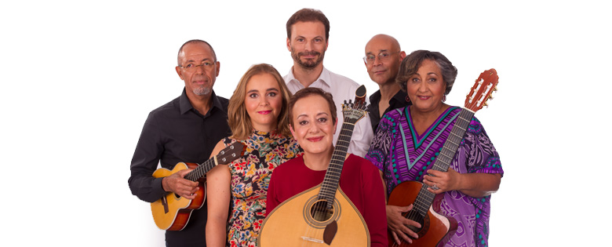

20 de Setembro | Quinta 19h00 | Gare Marítima de Alcântara Lisboa | «Mar Magalhães»
28 de Setembro | Sexta 21h00 | Museu Oriente Lisboa | «Mar Magalhães»
02 outubro | terça-feira 13h30 às 14h00 | TSF "Concerto de Bolso" | «2 temas ao vivo e em directo»
6 de Outubro | Sabado 20h30 | Convento São Francisco - Coimbra | «Guitarra de Mão em Mão»
19 de Outubro | Sexta 21h00 | Casa da Criatividade - São João da Madeira | «Mar Magalhães»
1 de Dezembro | Sábado 21h30 | Casa da Música Francisco Alves Gato - Mafra | «Mar Magalhães»